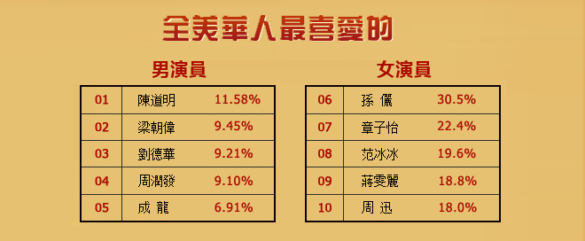
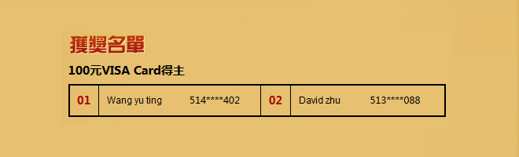

猜到了？中獎了？全美華人最喜愛的男女演員出爐
由iTalkBB中文電視"你愛看的我都有"傾情舉辦的"全美華人最愛看"大型票選活動已經開始兩週。眾多網友熱情投票，捍衛心中男神女神。繼第一週孫儷力壓范爺、國際章，榮膺"全美華人最愛女演員"之後，被大家親昵地稱為明叔的大陸實力男星陳道明擊敗兩岸三地新老男偶像，成功當選全美華人最喜愛的男演員。勞模天王劉德華與深情影帝梁朝偉則分列二三位。看來，相比於花美男們，北美的華人們顯然更偏愛戲好藝高的實力派大叔們啊。
以下為詳細排行榜
共有44位網友在上兩週的投票抽獎活動中幸運地被抽中，獲得了$100 Visa現金卡和$10的Amazon購物卡。以下為本期獲得百元現金卡的網友信息。
請登入 www.iTalkBB.com/vote 查看詳細獲獎名單
心動了嗎？也想成為得獎的幸運兒？下週全美華人最愛看的選秀節目大戰即將開始，想好要投給誰了嗎？本次票選共有8期，分別針對不同類目，週週開獎。所有投票者都能參與最終週的大抽獎，有機會贏取巨屏液晶電視。這麼好玩的票選，這麼誘人的獎品，還不趕快來參加？
投票方式：
1. 電話：撥打號碼1-877-482-5503
2. 網上：登陸網址www.iTalkBB.com/vote
投票時間 投票主題 公佈結果
| 投票時間 | 投票主題 | 公布結果 | |
| 第一期 | 8月26日 - 9月1日 | 全美華人最喜愛的女演員 | 9月3日 已公布 |
| 第二期 | 9月2日 - 8日 | 全美華人最喜愛的男演員 | 9月10日 已公布 |
| 第三期 | 9月9日 - 15日 | 全美華人最愛看的選秀節目 | 9月17日 |
| 第四期 | 9月16日 - 22日 | 全美華人最愛看的台灣電視 | 9月24日 |
| 第五期 | 9月23日 - 29日 | 全美華人最愛看的電視劇 | 10月1日 |
| 第六期 | 9月30日 - 10月6日 | 全美華人最愛看的少兒節目 | 10月8日 |
| 第七期 | 10月7日 - 13日 | 全美華人最愛看的時事節目 | 10月15日 |
| 第八期 | 9月14日 - 20日 | 全美華人最愛看的娛樂節目 | 10月22日 |
為華人量身定製的iTalkBB電話+電視套裝，每月只需$4.99起，即能直撥全美+全球，完全取代AT&T、Verizon等家庭電話，無需再買不好用的電話卡，也不用支付任何設備費！再加$20即能升級成無限套裝，無限暢打，想說多久就多久。現在加入，更有四個月免費的豪華優惠。另外還送2部手機共享每月500分鐘國際長途，再送1年iTalkBB中文電視。
iTalkBB高清中文電視擁有兩岸三地40+熱門頻道，支持實時直播和72小時回看，更有海量電影、電視劇、綜藝節目、幼教節目，全部免費點播。只需支付$49.99的開通費，即可看一整年，沒有月費，沒有設備費，也沒有合約。
iTalkBB全面啟動省錢風暴，優惠多多。詳情請撥打24小時服務熱線1877-482-5522或登入www.iTalkBB.com查詢詳情。
關於iTalkBB：
iTalkBB新電信是享譽全美的優秀通訊品牌，是國際電訊行業的領導和先驅。其以頂級全球網路和前沿技術為依託，以最具競爭力的價格為客戶提供高質、清晰的本地、國內及國際長途電話服務，以及高清中文電視直播、回播與點播服務。其電話業務能完全取代傳統家庭電話，並享受多重免費提供的附加功能如來電等待、三方通話、來電顯、來電轉接等。另有獨一無二的功能-中國大陸、台灣、香港、南韓當地號碼，當地親友只要撥打此號碼，就能接通到在美國的親友，而無需支付國際長途費用。iTalkBB的高清中文電視服務，自問世以來便受到了廣泛的好評和歡迎。超過五十個熱門頻道支持實時直播與48小時回看，海量最新電影電視劇綜藝節目免費無限點播，讓用戶以最低價格盡享華語娛樂。iTalkBB新電信將不斷努力，與您共同成就更美好的生活。iTalkBB設有24小時中英文的客戶服務熱線??1-877-482-5522和官方網站www.iTalkBB.com，一年365天提供不間斷的服務與更多信息的查詢。